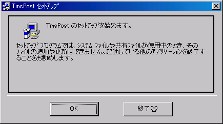
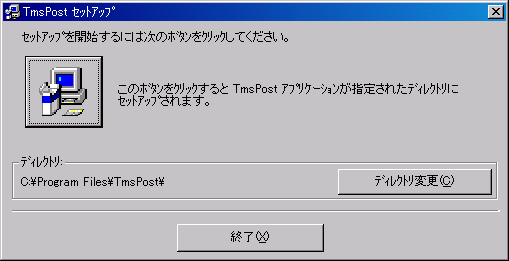
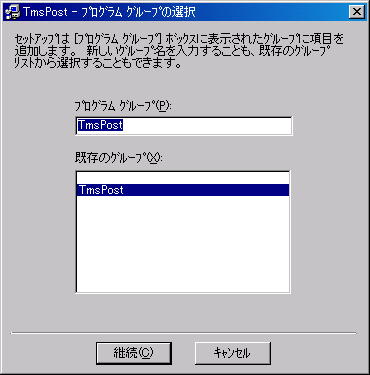
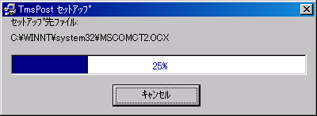

2-1.インストールの方法
Tms Postのインストールは以下の方法で行います。WindowsNT/2000上ではadministratorでloginし、インストール作業を行って下さい。
１）前準備
- Windows98/MeもしくはWindowsNT/2000を起動させて下さい。インストールはＷindows上で行います。
- 起動しているアプリケーションがありましたら、全てのアプリケーションを終了させて下さい。（<〜.dll>ファイルをコピーするときに他のアプリケーションが起動中の場合、上書きを拒否されコピーが正常に行えないことがあります。）
２）インストール
- ダウンロードしたTms Postの自己解凍ファイルを解凍します。解凍後に出来上がる“Setup.exe” をダブルクリックすると以下の画面が表示され、インストールの準備が行われます。Tms PostのインストールCDを使用する場合には、Windowsのエクスプローラーを起動して、「CD−ROMドライブ」を選択し“Setup.exe” をダブルクリックして下しさい。

- 画面の指示に従ってインストール先のディレクトリを指定して下さい。インストール先のディレクトリを選択後、＜SetUp＞ボタンをクリックします。

- インストールの準備が全て完了しました。＜継続＞をクリックすると、ファイルの解凍・複写を始めます。

- インストール完了後、「Tms Postのセットアップが完了しました。」というメッセージが表示されるので、＜OK＞ボタンをクリックします。これでインストールが終了します。
